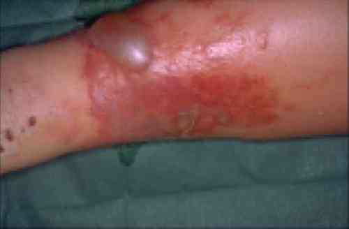
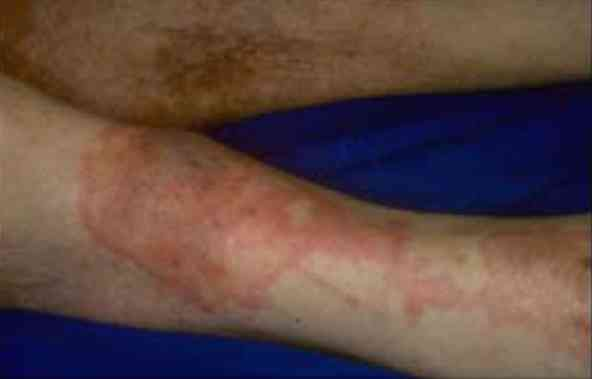

Bienvenue Sur Medical Education
Erysipèle
Spécialité : dermatologie / infectieux /
Points importants
-
Dermo-hypodermite infectieuse non nécrosante qui s'accompagne de signes inflammatoires locaux et généraux
-
Fréquente dans les pays occidentaux
-
Incidence en France = 190/100,000 habitants/an
-
Le diagnostic est clinique
-
Aucun examen paraclinique ne doit être systématique
-
Savoir rechercher les éléments du terrain qui aggravent le pronostic
-
Savoir poser l'indication d'hospitalisation
-
Savoir utiliser l'antibiotique adapté et à la bonne posologie
-
Savoir réévaluer le patient
-
Penser à traiter la porte d'entrée
-
Proscrire les AINS
-
La localisation aux membres inférieurs est la plus fréquente, mais les membres supérieurs, la face, la région périnéale sont également des sites possibles
-
Le germe responsable est le streptocoque ß hémolytique du groupe A (plus rarement groupes C et G)
-
L'isolement d'un staphylocoque (10 %) est usuellement considéré comme un contaminant non pathogène
-
La faible mortalité (0,5%) est essentiellement liée aux comorbidités
-
Les complications (abcès, dermohypodermite nécrosante, DHN) sont rares (3-12%) mais graves
Présentation clinique / CIMU
SIGNES FONCTIONNELS
Présentation clinique / CIMU
SIGNES FONCTIONNELS
Généraux
- Fièvre
- Asthénie
Spécifiques
- Douleur localisée
CONTEXTE
Terrain
- Immunodépression : VIH, corticothérapie au long cours, chimiothérapie, immunosuppresseurs, neutropénie, néoplasie, asplénie fonctionnelle ou anatomique, hypogammaglobulinémie (y compris dans un contexte de syndrome lymphoprolifératif)
- Diabète, obésité
- Lésion tégumentaire chronique
- Lymphoedème chronique
Traitement usuel
- Immunosuppresseurs
- Stéroïdes
- Traitements renseignant sur le terrain
Antécédents
- Infections à répétition
- Effraction cutanée
- Allergie aux bêtalactamines
Facteurs de gravité
- Erysipèle touchant un autre site que les membres inférieurs
- Eviction impossible de la porte d'entrée (ex. lésion nécrotique d'un pied diabétique)
- Immunodépression
- Porteur connu de germes multi-résistants
- Décompensation d'une comorbidité
- Complications locales (cellulite nécrosante, fasciite, abcès)
- Complications systémiques
- Impossibilité de traitement local
Circonstances de survenue
- Plaies ou excoriations mal soignées des membres inférieurs
- Intertrigo
- Lymphoedème
- Obésité
EXAMEN CLINIQUE
Constantes
- T° > 38,3°C ou < 36°C
- FC > 90 bpm
- PA basse
- FR > 20/min
Spécifiques
 _259 Photo Erysipèle au niveau de la cuisse
 _260 Photo Erysipèle au niveau du genou droit
- Eruption cutanée érythémateuse en relief par rapport aux téguments adjacents, avec bourrelet inflammatoire péri-lésionnel, douloureux
- Recherche d'une lymphangite, une adénopathie satellite
- Recherche d'une porte d'entrée cutanée
Facteurs de gravité
- Systémiques liés à l'infection : recherche de signes de sepsis sévère ou de choc septique
- Systémiques liés au terrain : recherche de décompensation d'une tare sous-jacente
- Locorégionales : recherche de signes évoquant une DHN : lésions purpuriques, douleurs intenses, de siège profond, musculaire
EXAMENS PARACLINIQUES SIMPLES
- Glycémie capillaire
CIMU
- Tri 1 : si troubles de conscience, signes de choc (marbrures, cyanose, PA imprenable), détresse respiratoire
- Tri 2 : fièvre avec signes de gravité clinique : T° > 39°C ou < 36°C, FR > 20/min, SpO2 < 90% à l'air ambiant, PAS < 90 mmHg, FC > 120 bpm
- Tri 3 : érysipèle sans complication systémique et pas de doute sur DHN
Signes paracliniques
BIOLOGIQUE
-
La réalisation d'examens paracliniques est laissée à l'appréciation du clinicien, mais n'est pas recommandée systématiquement
-
NFS (leucocytose), plaquettes. Dans l'érysipèle, la réalisation d'une numération n'est pas obligatoire (si fièvre élevée, comorbidité)
-
Ionogramme sanguin, urée, créatinine
-
Glycémie
-
Prélèvements bactériologiques :
-
hémocultures
-
mise en culture des prélèvements locaux (faible rentabilité)
- hémocultures
- mise en culture des prélèvements locaux (faible rentabilité)
Recherche de signes en faveur d'un syndrome de réponse inflammatoire systémique (SRIS) ou SIRS (systemic inflammatory response syndrome)
- Il est peu spécifique. Le SRIS n'est pas obligatoirement associé à une infection mais à une composante inflammatoire (hémorragie, traumatisme...)
-
Il se définit par au moins 2 critères parmi les suivants :
- T° > 38,3°C ou < 36°C
- FC > 90 bpm
- FR > 20/min ou PaCO2 < 32 mmHg
- Globules blancs > 12000/mm3 ou < 4000/mm3 ou > 10% de formes immatures
IMAGERIE
- La phlébite n'est pas une complication classique de l'érysipèle. La réalisation systématique d'un doppler veineux n'est pas recommandée
Diagnostic étiologique
-
Il est clinique
-
Membres inférieurs :
-
intertrigo fissuraire
-
ulcère de jambe
-
plaie...
-
Visage : lésion cutanée (perlèche)
-
Le germe, lorsqu'il est isolé (moins de 50% des cas), est principalement le streptocoque bêta-hémolytique du groupe A, mais également des groupes C et G
-
L'isolement d'un staphylocoque est plus rare (environ 10 %) et il est difficile de préciser s'il s'agit d'une co-infection ou d'un contaminant non pathogène
Diagnostic différentiel
-
Dermohypodermites non infectieuses
-
Formes compliquées d'infection des parties molles (dermohypodermite nécrosante)
-
Thrombose veineuse
Traitement
TRAITEMENT PREHOSPITALIER/INTRAHOSPITALIER
- intertrigo fissuraire
- ulcère de jambe
- plaie...
Diagnostic différentiel
- Dermohypodermites non infectieuses
- Formes compliquées d'infection des parties molles (dermohypodermite nécrosante)
- Thrombose veineuse
Traitement
TRAITEMENT PREHOSPITALIER/INTRAHOSPITALIER
Stabilisation initiale
- Antibiothérapie (amoxicilline)
- Antalgie et antipyrexie (paracétamol)
- Contre-indication des AINS
- Traitement éventuel d'un sepsis associé
- Traitement de la porte d'entrée
Suivi du traitement
- Réévaluation à 72 heures
- Le traitement conventionnel est réputé efficace dans plus de 80% des cas
MEDICAMENTS
-
Amoxicilline per os :
- poids < 80 kg : 1 g x 3/j pendant 10 jours
- poids > 80 kg : 1,5 g x 3/j pendant 10 jours
- Si amoxicilline non possible (allergie), pristinamycine 1 g x 2/j durant 10 jours
Surveillance
CLINIQUE
(à 72 heures)
- Signes systémiques d'infection
- Déstabilisation d'une tare sous-jacente
- Signes locaux de complication (abcès, tâches purpuriques, douleur intense)
PARACLINIQUE
- Non, sauf cas particulier
Devenir / orientation
CRITERES D'ADMISSION
En préhospitalier
- Tout sepsis grave impliquera idéalement un transport direct en réanimation
- Tout doute sur DHN nécessite une prise en charge en milieu spécialisé
En intrahospitalier
- CIMU 1 ou 2
- Signes de choc ou de sepsis sévère
- Décompensation d'une tare sous-jacente
- Doute sur une DHN
- Complication locale (abcès)
-
Hospitalisation secondaire (patient revu à J3) si :
- persistance de la fièvre après 72 h de traitement bien conduit
- apparition de nouveaux signes locaux ou généraux
- décompensation d'une maladie associée
CRITERES DE SORTIE
- Toute situation correspondant à un érysipèle non compliqué
ORDONNANCE DE SORTIE
- Amoxicilline 1g matin midi et soir pendant 10 jours
- Paracétamol 500 2cp matin midi et soir si fièvre ou douleur
- Traitement de la porte d'entrée à adapter : antiseptiques, antifongiques
RECOMMANDATIONS DE SORTIE
- Ne pas prendre d'AINS et d'aspirine
-
Reconsulter si :
- persistance de la fièvre au-delà de 72h
- apparition de bulles
- aggravation des douleurs
- cyanose tégumentaire
Mécanisme / description
-
Dermo-hypodermite infectieuse non nécrosante qui s'accompagne de signes inflammatoires locaux et généraux
-
Complications : abcès rare (3 à 12%) et d'évolution favorable après drainage
-
La présence de lésions ecchymotiques extensives locales doit alerter sur un possible diagnostic de cellulite profonde. Les thromboses veineuses profondes ne sont pas considérées comme des complications de l'érysipèle, la pratique d'un écho-doppler des membres inférieurs ne doit pas être systématique. Les exceptionnelles complications générales sont dominées par l'iatrogénie, principalement les toxidermies à la pénicilline
-
Le traitement antibiotique est dirigé logiquement contre le streptocoque. Le choix de la molécule est fonction des habitudes de chacun. Comme cela est usuel, il existe une variété importante de propositions d'antibiotiques avec une préférence pour la clindamycine en Amérique du Nord et les pénicillines en Europe. L'efficacité des traitements intraveineux et oraux a été rapportée. Il existe peu d'études méthodologiquement robustes pour un choix antibiotique objectif
-
Dans le cas précis d'un érysipèle non compliqué, la conférence de consensus francophone actuelle est pragmatique et privilégie l'utilisation d'amoxicilline par voie orale. La conduite de cette antibiothérapie est guidée par l'obtention en 72 heures d'une apyrexie et la rétrocession des signes locaux, avec un contrôle médical au 3° et au 15° jour. Le traitement conventionnel est réputé efficace dans plus de 80 % des cas. La durée totale préconisée de l'antibiothérapie est de 10 à 20 jours
Bibliographie
-
Prise en charge initiale des états septiques graves de l'adulte et de l'enfant Groupe Transversal Sepsis. Réanimation. 2007 ;16 :S1-S21
-
Conférence de consensus. Érysipèle et fasciite nécrosante : prise en charge. Méd Mal Infect 2000 ; 30 Suppl4 : 245
-
Bjornsdttir S et al. Risk Factors for Acute Cellulitis of the Lower Limb: A Prospective Case-Control Study. Clin Infect Dis. 2005 ;41 :1416
-
Leman P & Mukherjee D. Flucloxacillin alone or combined benzylpenicillin to treat lower limb cellulitis: a randomised controlled trial. Emerg Med J. 2005;22:342
-
Bisno AL, Stevens DL. Streptococcal infections of skin and soft tissues. N Engl J Med 1996;334:240
-
Hepburn MJ et al. Comparison of short-course (5 days) and standard (10 days) treatment for uncomplicated cellulitis. Arch Intern Med. 2004;164:1669
-
Bernard P et al. Oral pristinamycin versus standard penicillin regimen to treat erysipelas in adults: randomised, non-inferiority, open trial. BMJ. 2002;325:864
Bibliographie
- Prise en charge initiale des états septiques graves de l'adulte et de l'enfant Groupe Transversal Sepsis. Réanimation. 2007 ;16 :S1-S21
- Conférence de consensus. Érysipèle et fasciite nécrosante : prise en charge. Méd Mal Infect 2000 ; 30 Suppl4 : 245
- Bjornsdttir S et al. Risk Factors for Acute Cellulitis of the Lower Limb: A Prospective Case-Control Study. Clin Infect Dis. 2005 ;41 :1416
- Leman P & Mukherjee D. Flucloxacillin alone or combined benzylpenicillin to treat lower limb cellulitis: a randomised controlled trial. Emerg Med J. 2005;22:342
- Bisno AL, Stevens DL. Streptococcal infections of skin and soft tissues. N Engl J Med 1996;334:240
- Hepburn MJ et al. Comparison of short-course (5 days) and standard (10 days) treatment for uncomplicated cellulitis. Arch Intern Med. 2004;164:1669
- Bernard P et al. Oral pristinamycin versus standard penicillin regimen to treat erysipelas in adults: randomised, non-inferiority, open trial. BMJ. 2002;325:864
Auteur(s) : Yann-Erick CLAESSENS